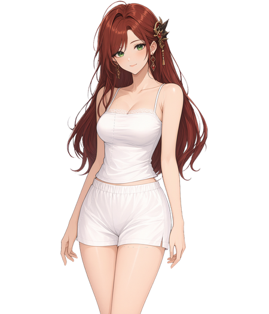
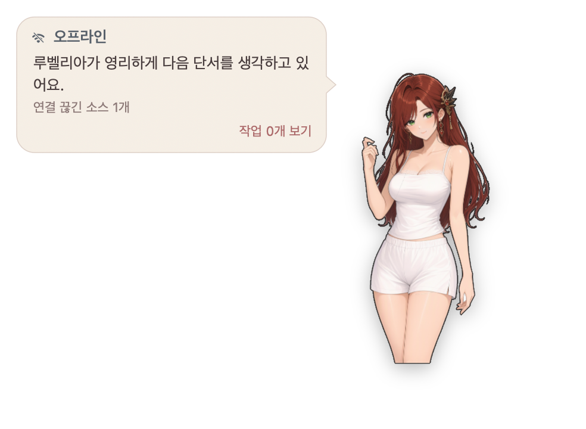
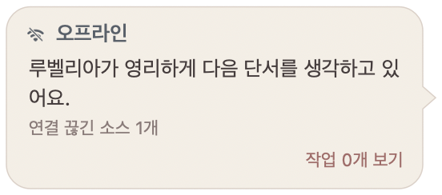

Rubelia responds to touch
Tap her head or body, or pet her head for a reaction. Drag her around your desktop and adjust her size.
NATIVE DESKTOP COMPANION
Rubelia reacts beside your workspace and shows observed Herdr session states in her status bubble.
Apple Silicon Mac macOS 13+ Rubelia bundled

01 / IN THE APP
Captured from the native macOS app v0.3.2 in an isolated offline profile. No sessions are connected in these shots.


02 / WHAT IT DOES
Three ways a desktop character connects with your Herdr workspace.
Tap her head or body, or pet her head for a reaction. Drag her around your desktop and adjust her size.
The bubble’s session cards show idle, running, waiting, or unknown status. They do not infer an agent’s outcome.
Send a message from a selected local agent card. Herdr accepting it does not mean the work is complete; remote cards are read-only.
03 / GET STARTED
Apple Silicon Mac · macOS 13 or later. Pick the installation path that fits your setup.
Install from the plugin repository, then invoke the start action on a running host.
herdr plugin install hanbong5938/herdr-desktop-pet
herdr plugin action invoke start --plugin desktop-petInstall the native app and CLI from the personal tap, then start it directly.
brew install hanbong5938/tap/herdr-desktop-pet
herdr-desktop-pet start04 / CHARACTERS
Rubelia is the only bundled character. Optional characters and wardrobe packs live in a separate official character repository. In supported app versions, the character browser offers explicit verified download and apply for published, supported packs only.
Explore the character repository05 / GOOD TO KNOW
A few things to know before you begin.
No. The native distribution targets Apple Silicon Mac with macOS 13 or later.
No. You can submit a message when the server for your selected local session supports agent.prompt. Success means Herdr accepted it, not that the agent processed or completed it. Remote sessions are read-only.
No. Client-attach auto-start requires a host supporting the client.attached hook: apply the supplied patch to official Herdr 0.9.3 source, or use a host release explicitly supporting it. Stock 0.9.0 and 0.9.3 lack this hook.
No. Only Rubelia is bundled. Explore optional packs and their terms in the separate official character repository.